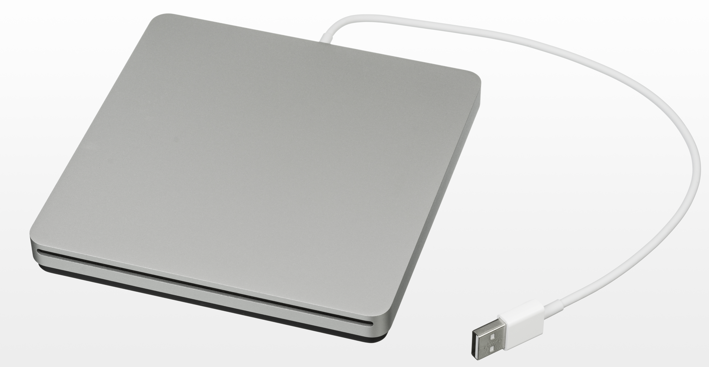

📖 Overview
While now a legacy component for mainstream users, optical drives use precise laser technology to access data encoded as microscopic pits and lands on a polycarbonate disc.
⚙️ Architecture & Working Principle
Consists of a spindle motor, a tracking mechanism, and an optical pickup head containing a semiconductor laser diode and photodiode sensor.
A laser beam is focused onto the spinning disc. Changes in reflection from pits (indentations) and lands (flat areas) are detected by the photodiode and translated into binary data.
🖼️ Technical Diagrams

Source | License: Public Domain / Creative Commons via Wikimedia